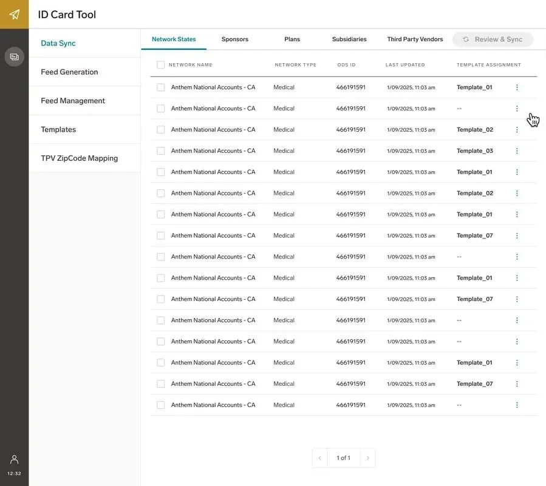
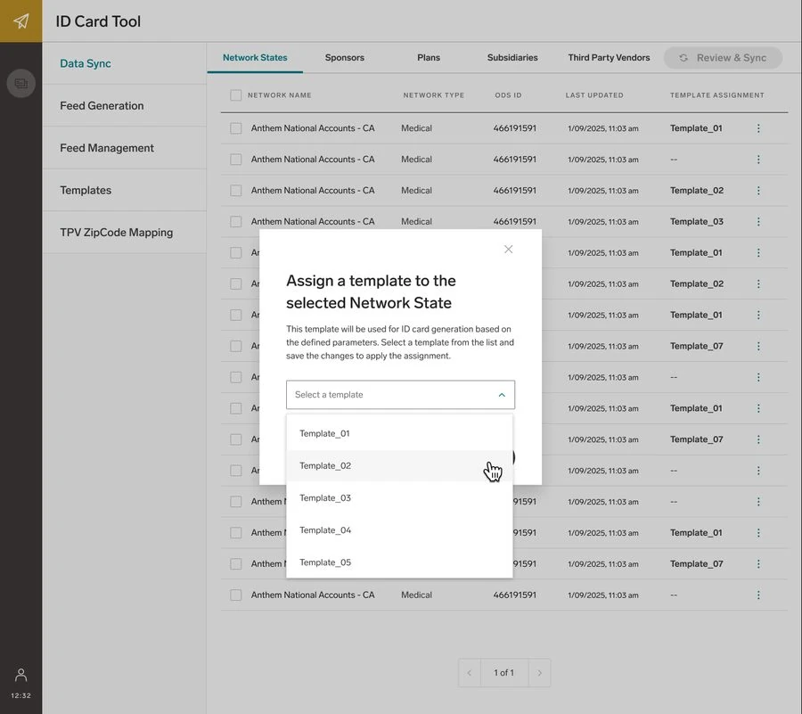
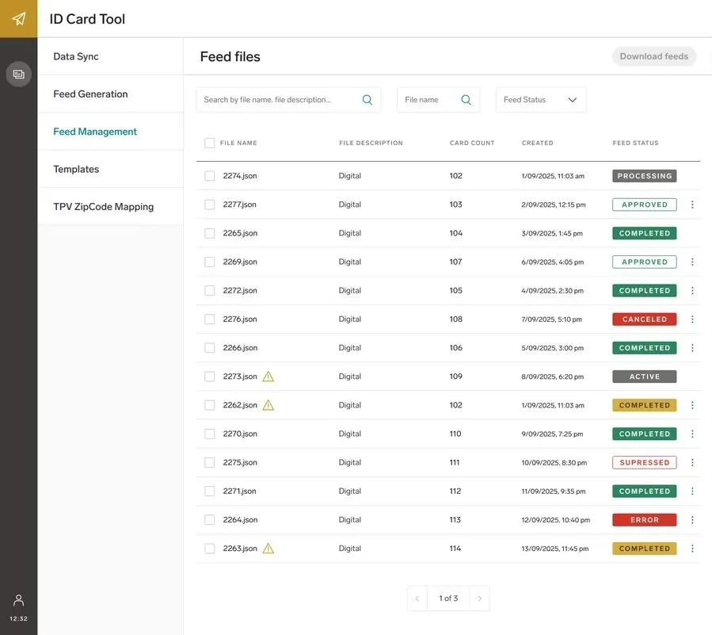
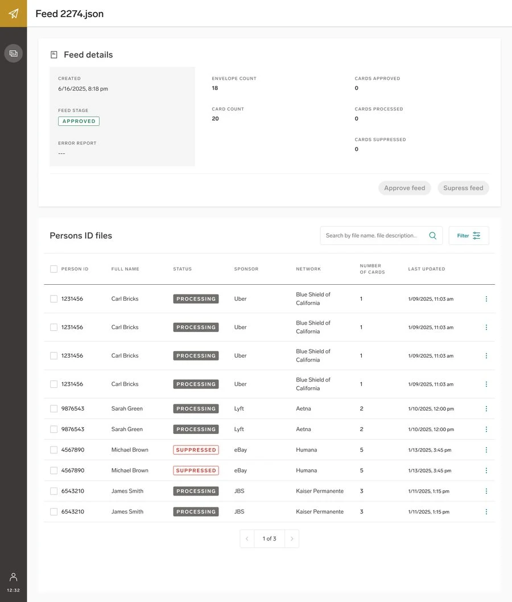
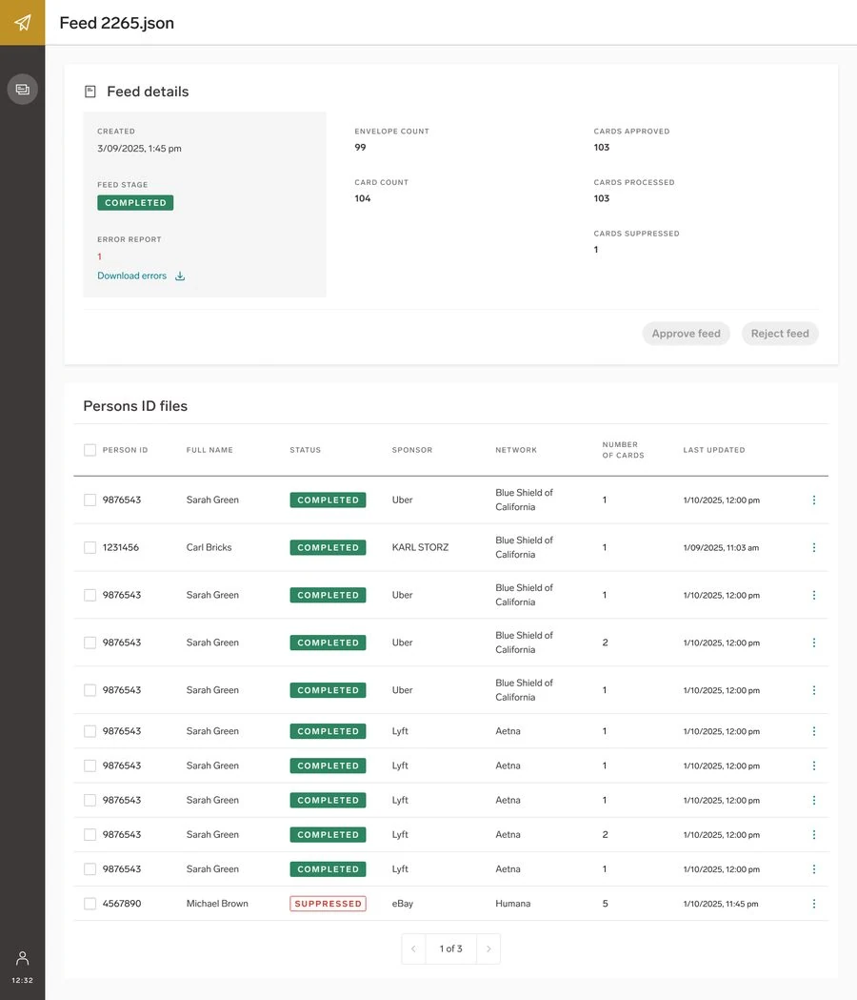
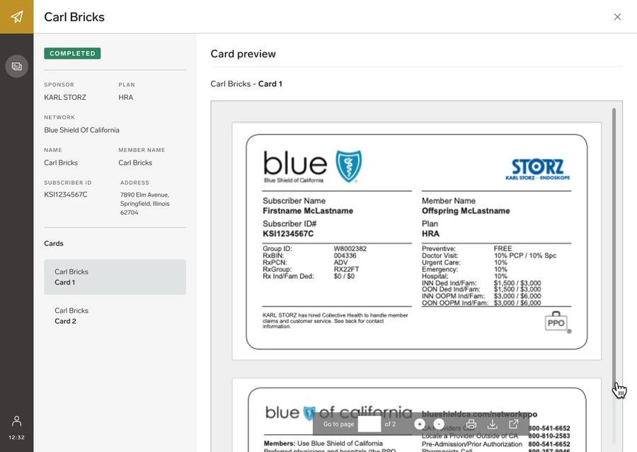
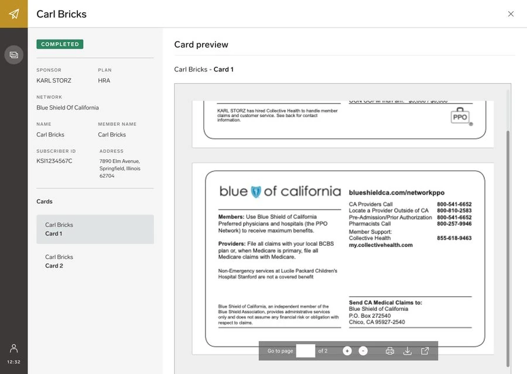

Every member ID card started as a request routed to a third-party vendor — even for a one-line template change. This project brought template creation, card generation, and approval in-house, so Collective Health's own Card Operations team could own the entire process end to end.
The starting brief sounded simple: build a tool for ID cards. In practice, almost none of the process was visible to us yet. Card templates were designed and hosted on the vendor's side, mock cards were reviewed over email, and production files were handed off through the vendor's own platform. Discovery started with walking through that entire vendor-side workflow end to end with the Card Operations team, before designing a single screen.
The most important discovery exercise wasn't a screen at all — it was a shared spreadsheet mapping every visual element on a card to whether it was static per network (the background, the disclaimer text, the layout) or dynamic per member (name, ID, plan details). That mapping became the data model the entire in-house system was eventually built on.
Early sessions kept stalling on the words "preview," "mock," "test," and "production" — each person on the team meant something slightly different by them. Defining clear boundaries between building a template, testing it with fake data, and approving it with real data was what let the team agree that mock and production approvals could share the same interface, just pointed at different environments — a decision that shaped the entire approval flow.
Mostly backend — but it needed a visible home for Ops to track every batch and its status.
The biggest UX lift: letting Ops create, assign, and maintain templates without opening a ticket with engineering.
Replacing an email-based, vendor-routed approval chain with something the team could run themselves.
One recurring blocker kept resurfacing in discovery: Ops designed card backgrounds visually in Illustrator or Figma, but the templating system needed everything in HTML — and neither tool converted cleanly. That translation gap meant the first release had to work within a defined set of configurable fields rather than fully open-ended visual design, a real technical constraint that discovery surfaced early enough to design around instead of hitting in production.
Engineering priorities shifted more than once as more urgent card issues came up, so design work ran in three overlapping phases — each one reviewed as low-fidelity wireframes in recurring sessions with Product, Engineering, and Ops before moving to high fidelity.
With template creation and card generation handled internally, the vendor's role shrank to what actually required a print shop: physical mailing. Everything upstream of that — design, data mapping, generation, and approval — now runs inside tools the team owns.
From assigning a template to a network, to generating and approving a batch, to the card a member actually receives.







Most of the real design work happened before any screen existed — in a spreadsheet mapping template versus data, and in meetings where we finally agreed on what "mock" meant. Discovery here wasn't a phase I moved through quickly to get to designing; it was the project.
I also learned to design around a moving delivery timeline instead of against it. Splitting the work into phases that could each ship independently meant progress didn't stall every time engineering priorities shifted — the team always had a clear, de-scoped next step ready to go.